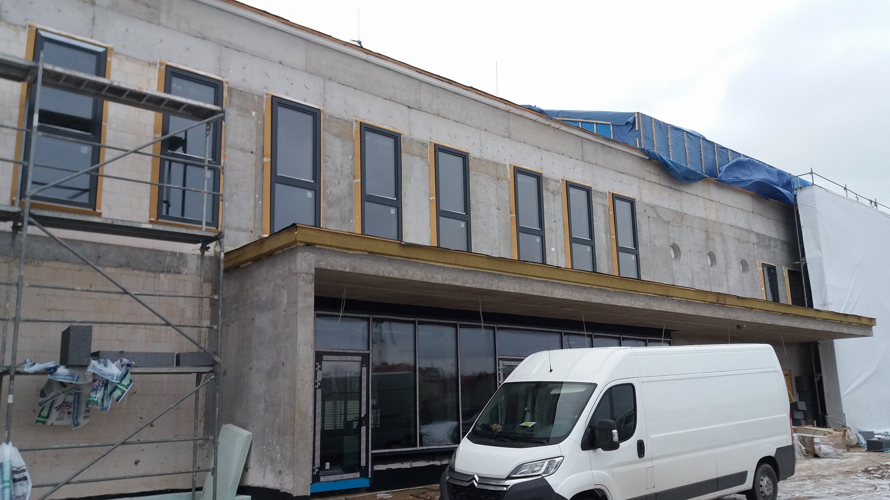

Nasze specjalizacje
Poznaj systemy, dzięki którym masz pewność najwyższej jakości oraz profesjonalizmu montażu stolarki okiennej

illbruck MOWO
Systemowe mocowanie i uszczelnianie złącza okiennego w płaszczyźnie ocieplenia budynku
System wprowadza nowy standard do montażu stolarki okiennej w zakresie ocieplenia, jako połączenie montażu okna
wraz z uszczelnieniem złącza okiennego. Technologia całkowicie rezygnuje z pianki poliuretanowej,
która wymaga równoczesnego zabezpieczenia przed wilgocią i promieniami UV. System nie wymaga specjalistycznego
sprzętu, sama rama dla okna wykuszowego, jest wydłużeniem ościeża. Profil instalacyjny MOWO jest
poziomowany w trakcie montażu co stanowi zmniejszenie nakładu pracy nad montażem.
Technologia illbruck MOWO jest energooszczędna. Oznacza to dla Inwestora zmniejszenie kosztów.
System ten umożliwia zamknięcie otworów już po 24h, zatem Inwestor nie musi dokładać starań przy uszczelnianiu okien.
Umożliwia on także ponowny montaż stolarki okiennej bez dodatkowych kosztów związanych z naprawą elewacji.
Technologia jest dedykowana do energooszczędnego, pasywnego oraz zeroenergetycznego budownictwa,
które jest obowiązkiem Inwestorów zgodnie z postawieniami Dyrektywy 2010/31/UE Parlamentu i Rady Unii Europejskiej.
Zaletami tego systemu są:
-Technologiczne mocowanie i izolacja okna wysuniętego w linię izolacji
-Wodoszczelność, odporność na pleśń, stabilność wymiarowa
-Szczelność przy zacinającym deszczu 1050Pa
-Hermetyczność 3 2/3 a < 0,1 [m /m*h*daPa ]
-Możliwość późniejszej wymiany okien bez uszkodzenia elewacji
illbruck i3
System „illbruck i3” do prawidłowego montażu okien
Dzięki temu systemowi praca projektantów stała się łatwa jak nigdy dotąd. Oferuje on kompletny zestaw produktów do
uszczelniania każdej z trzech warstw uszczelnienia okien. Składniki systemu można między sobą łączyć w mnogość kombinacji,
które sprostają nawet najbardziej złożonym inwestycją. Inwestor wybierając ten system montażu stolarki okiennej
ma pewność powietrznoszczelności oraz bardzo ekologicznemu podejściu do montażu. Wszystkie produkty w jasny sposób
są podzielone ze względu na zastosowanie. System zostawia Inwestorom szerokie spektrum wyboru montażu.
W skład systemu wchodzą:
-TP610 illmod Eco
-TP600 illmod 600
-TP650 illmod Trio
-ME500 Folia okienna Duo
-ME503 folia okienna Duo VZ
-ME410 Folia butylowa okienna
-FM370 Pianka pistoletowa
-FM371 Pianka zimowa
-FA101 Neutralny uszczelniacz silikonowy
-PR102 Sznur polietylenowy okrągły